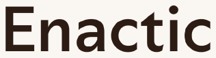
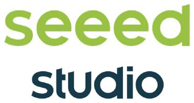
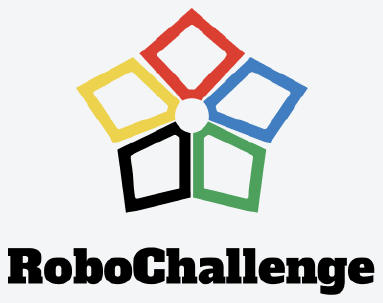

Open Hardware
Arms · Hands · Mobile bases · Humanoids
What does it take to publish a result on open hardware that another lab can reproduce?
CoRL 2026 · Half-Day Workshop · November 9, 2026
11ms.ai 2Hugging Face · LeRobot 3Rice University
In collaboration with



Three breakout sessions, one stack
Arms · Hands · Mobile bases · Humanoids
What does it take to publish a result on open hardware that another lab can reproduce?
Quality · Specification · Diversity
What minimum specification makes a dataset reusable across labs — and what licensing preserves it?
Vision-Language-Action policies
Where do open VLAs fail, and what shared evaluation measures progress against closed baselines?
Each point is a robot. Open designs (green) arrive late, low, and in growing numbers. Filter by type; hover for detail.
⚠ Open figures are parts-only (BOM); commercial figures are retail. The gap is real but narrower than the raw points suggest.
Cumulative open demonstrations as each dataset is released. Aggregators (OXE, ARIO) are excluded to avoid double-counting.
Open vs. commercial arms at matched capability — 5, 6, and 7 DOF. Each vertical link compares the cheapest open arm with a commercial counterpart at the same DOF. Hover for detail.
Sources: hardware (77 platforms) · datasets
A shared spec — CAD, URDF, firmware, calibration — that pins down what “the same robot” actually means, so data collected on one unit transfers to another and results reproduce across labs.
Tackles: unit drift · data transferabilityAutomatically crawls the open ecosystem — new Hugging Face Hub datasets and releases — standardizes them into a monthly snapshot anyone can pull. And, Common-Voice-style, anyone can push their own demonstrations into the shared bucket.
Tackles: fragmentation · access · contribution frictionA shared, reproducible benchmark for open vision-language-action models — run on real robots via RoboChallenge's hosted fleet, so the community can measure progress against closed baselines on common tasks.
Tackles: unclear progress · no shared baseline| 0:00 | Opening — framing the three breakout sessions |
| 0:10 | Invited talks + lightning round — one talk per breakout session, contributed flash presentations |
| 1:10 | Coffee + poster/demo session |
| 1:30 | Interactive robot demo — 6–12 open robots, three stations, one shared reference task |
| 2:30 | Breakout groups — three parallel, one per session; structured output |
| 3:25 | Fishbowl synthesis — facilitators report back; disagreements surfaced |
| 3:55 | Closing — artifact next steps |